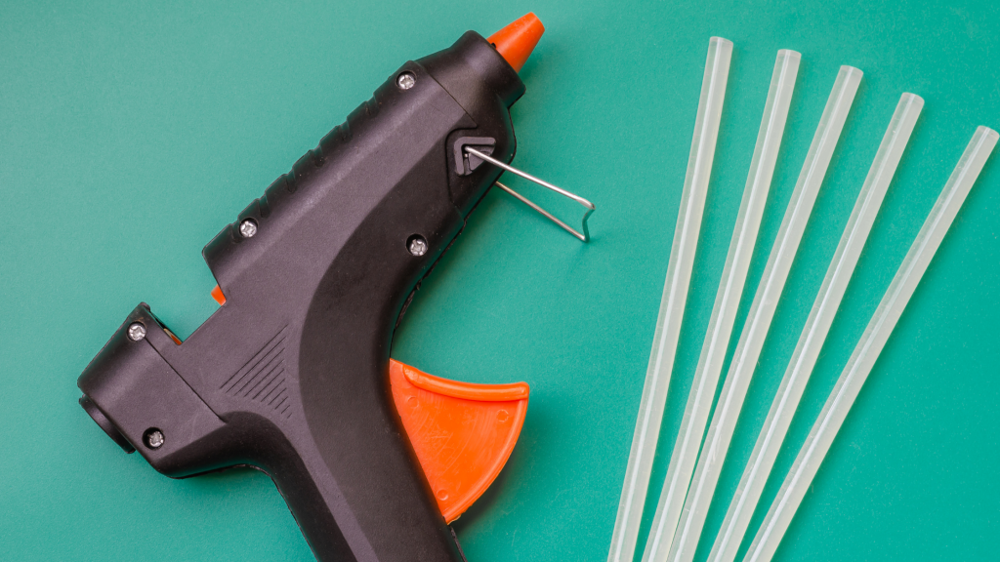

Vamos dividir nossa lista em equipamentos e materiais. Quanto aos equipamentos, eles tem a função de facilitar na hora de fazer seu DIY. Claro que não ter algumas destes equipamentos na sua casa não irá te impossibilitar completamente de fazer suas obras em casa, mas alguns deles otimizam o tempo de elaboração, protege melhor seu usuário e aumentam a resistência do novo material que irá decorar seu lar. Alguns deles também podem ser alugados em casas de construção especializadas.
Alguns itens que podem ser utilizados durante os cursos
| Nome |
Preço |
| Pistola de cola quente |
R$30,50 |
| Lixadeira |
R$50,00 |
| Furadeira |
R$200,00 |
| Agulha |
R$5,00 |
| Tintas |
R$5,00 ... R$100,00 |
| Materias em Madeira |
R$100,00 ... R$500,00 |
| Tecidos |
R$50,00 ... R$200,00 |
